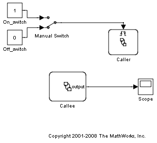
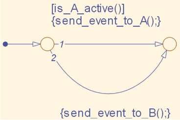
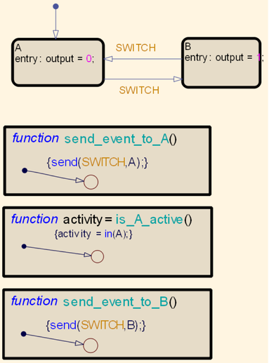

Exporting a Graphical Function
This demonstration illustrates how graphical functions can be exported and used as a means for accessing data. The output shown in the scope block, is equal to 1 when the manual switch is in the On_switch state, or 0 when the switch is in the Off_switch state.
The Caller chart is triggered by the Manual Switch. Graphical functions which are defined in the Callee chart, are then called by the Caller chart. In the Callee chart, the output is set to 0 in state A and set to 1 in state B. The graphical functions which are called by the Caller chart, first check if state A is active and then send a transition event signal to the appropriate state. This method allows you to create flexible models which contain different triggering events that define the final output.
  